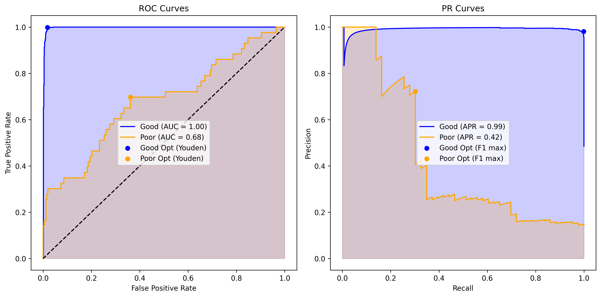

Section 2.5 Evaluating Predictions
So far we have talked about learning parameters \(\theta\) for models of the conditional probability \(P_\theta(Y \mid X)\) in various types of problems using a dataset of \((X,Y)\) values called the training dataset. We call the \(P_\hat\theta(Y \mid X)\) with optimized parameters \(\hat\theta\) is called a trained model.
To evaluate the quality of a trained model we need a fresh dataset. In order not to introduce bias in the evalaution of a trained model, we cannot use the same data that was used to train the model in the first place. This pristine set-aside-for-test dataset is called the test dataset. Often, the strategy is to split all the data we have into two subsets for training and testing purposes. We use the test subset solely for testing. After testing with it, we cannot use the knowledge learned to go back an tweak the model to make it perform better on the test. That will make the test set part of the learning process, which we are trying to avoid in order for us to know how the trained model will do on new data later on.
We will use the following notation for the training and test subsets:
\begin{align*}
\amp \text{Training: } \mathcal{D} = \left[ \left( x^{(i)}, y^{(i)} \right),\ i = 1, 2, \cdots, n \right]\\
\amp \text{Test: } \mathcal{D_t} = \left[ \left( x^{(i)}, y^{(i)} \right),\ i = 1, 2, \cdots, m \right]
\end{align*}
The error formula used for training the model may or may not fully align with the end objective of the project. The error formula is usually used for estimating the parameters of the model, which requires taking derivatives of the error function with respect to the parameters. Easy differentiability is not a requirement in the evaluation process. For instance, in a binary classification model, we may just want to know percentage of the times the model predicts the correct label - this will be just be a sum of Kronecker delta symbols, which are not differentiable.
The foremost requirement of evaluation of a model is how it performs on the business requirement of the use of the model. In general, we use a scoring function that closely aligns with the objective of the project. Since these metrics depend on the type of questions we want to answer, it is best to describe them with examples.
First, we will look at a regression task. Then, we will go over a binary classification task. It turns out that binary classification has several important ways for evaluating models and we will try to cover the most common ones below.
Subsection 2.5.1 Evaluating Regression Tasks
In regression tasks, the trained model is usually a probability density function \(\rho_{Y\mid X}(Y;\hat\theta)\text{,}\) where \(\hat{\theta}\) are the estimated or trained parameters. Suppose, we want to predict the best \(Y\) given an \(X\text{,}\) what should be the predictor function \(f(X)\) and how should we evaluate it? The answer depends on whether \(\rho_{Y\mid X}(Y;\hat\theta)\) is a skewed distribution or not.
Non-skewed Distribution
Suppose, \(\rho_{Y\mid X}\) is not skewed. Then, the “best” prediction for \(Y\) is the mean value of \(Y\text{.}\) Therefore, the predictor function will be
\begin{equation*}
f_\theta(X) = \mathbb{E}[Y\mid X][Y] = \int y\rho_{Y\mid X}(y;\theta)\, dy.
\end{equation*}
where I have included the parameter indicator so that we are aware that the predictor function will depend upon the parameters of the model for \(\rho\) which are estimated/trained using the trainign dataset \(\mathcal{D}\text{.}\)
To evaluate the quality of this predictor, the average value of the Mean Squared Error is the score function that also minimizes the training error when used during the training f the model. The formula for squared error is
\begin{equation*}
\textrm{SE} = \left( f(X) - Y\right)^2
\end{equation*}
Evaluating its average over the test set gives us the mean squared error.
\begin{equation*}
\left.\textrm{MSE}\right|_{\mathcal{D}_t} = \frac{1}{m}\,\sum_{i=1}^m\,\left( f_{\hat\theta}(x^{(i)}) - y^{(i)} \right)^2.
\end{equation*}
That is, mean squared error is empirical expectation of the squared error (a random variable) in the distribution represented by the test dataset, with each datapoint weighing equally. When we use this same formula during the training, we minimze the following error function.
\begin{equation*}
\left.\textrm{MSE}\right|_{\mathcal{D}} = \frac{1}{m}\,\sum_{i=1}^m\,\left( f_\theta(x^{(i)}) - y^{(i)} \right)^2,
\end{equation*}
where \(\theta\)’s are to be adjusted during the training. You should note different uses of the squared error during training and testing for this task.
Non-skewed Distribution
If \(\rho_{Y\mid X}\) is skewed or if you suspect that the training data has outliers that have influenced the estimation process, then, a better prediction of “best” \(Y\) will be the median of the distribution. The score function in that case would be the expectation of the absolute difference between the predictor and the true. This score function is called mean absolute error (MAE)
\begin{equation*}
\left.\textrm{MAE}\right|_{\mathcal{D}_t} = \frac{1}{m}\,\sum_{i=1}^m\,\left( f_{\hat\theta}(x^{(i)}) - y^{(i)} \right)^2.
\end{equation*}
Subsection 2.5.2 Evaluating Binary Classification
In a binary classification, the task is to predict whether a given \(X\) belongs to one of the two classes, \(Y=1\) (i.e., True/Success) or \(Y=0\) (i.e., False/Failure). In the logistic regression algorithm, we have modeled the conditional probability mass function \(P_{Y \mid X}(Y=1;\theta)\text{,}\) i.e., probability of outcome being \(Y=1\) for a given \(X\text{,}\) as a sigmoid, whose parameters were optimized by using the training data \(\mathcal{D}\text{.}\)
For brevity, let us denote the trained probability by
\begin{equation*}
P_{Y \mid X}(Y=1;\hat\theta) \equiv p_\hat{\theta}(X).
\end{equation*}
This will be our predictor. AFTER the training is done, we use the predictor with a threshold \(p_\text{th}\) fordecision.
\begin{align*}
\amp Y_\text{pred} = 1\ \text{ if }\ p_\hat{\theta}(X) \gt p_\text{th}\\
\amp Y_\text{pred} = 0\ \text{ otherwise.}
\end{align*}
Note that \(Y_\text{pred}\) depends upon \(X\) and the training dataset through the predictor \(p_\hat{\theta}(X)\text{.}\) In our examples in previous sections, we have used the threshold \(p_\text{th} = 0.5\) but that may not be optimal for all problems. We will discuss below a systematic way of choosing appropriate threshold for a problem. For now, suppose, we have a rule for converting trained model into predictions on the outcomes and we want to evaluate the quality of resulting predictions.
Subsubsection 2.5.2.1 Metrics of BinaryClassification
Accuracy
To evaluate the trained model, a simple measure is the percentage of the times we got the prediction right, whether it was for \(Y=1\) or for \(Y=0\text{.}\) This measure is called accuracy of the model. The score function for this measure will just be a Kronecker delta of the predictor and the corresponding \(Y\text{.}\) As a random variable, accuracy will by
\begin{equation*}
\text{Accuracy}(X,Y)\ = \begin{cases} 1 \amp Y_\text{pred}(X) = Y \\ 0 \amp \text{otherwise} \end{cases}
\end{equation*}
The accuracy of the model over the test set will be the expectation value of this random variable on the test dataset \(\mathcal{D}_t\) with each datapoint counting equally.
\begin{equation*}
\left.\text{accuracy}\right|_{\mathcal{D}_t} = \frac{1}{m}\sum_{i=1}^{m}\, \text{Accuracy}( x^{(i)}, y^{(i)} ).
\end{equation*}
Confusion Matrix
For many problems, accuracy turns out to be good enough for evaluating the quality of predictions. Accuracy, however, misses some details that you might care about. For instance, it lumps together being right on both \(Y=1\) and \(Y=0\) cases and you might care more about being right on, say the outcome \(1\) than on the outcome \(0\text{.}\) In these cases, you might want to look more closely at when you are wrong and when you are right.
Just as there are two events for which you can be right, i.e., when you predict \(1\) and data (i.e., true) value is also \(1\text{,}\) and when you predict \(0\) when the data value is also \(0\text{,}\) there are two ways of being wrong: you predict \(1\) but the data value is \(0\) and you predict \(0\) but the data value is \(1\text{.}\) Suppose, we refer to \(Y=1\) as positive and \(Y=0\) as negative, then we call these various types of outcomes by different names.
-
True Positive (TP): You predict \(1\) and data (i.e., true) value is also \(1\text{.}\)True Negative (TN): You predict \(0\) and data (i.e., true) value is also \(0\text{.}\)False Positive (FP): You predict \(1\) but the data (i.e., true) value is \(0\text{.}\)False Negative (FN): You predict \(0\) but the data (i.e., true) value is \(1\text{.}\)
Suppose, there are \(1000\) points in the test dataset and you find \(400 \ \text{TP}\text{,}\) \(300 \ \text{TN}\text{,}\) \(100 \ \text{FP}\text{,}\) and \(200 \ \text{FN}\text{.}\) It is a common practice to present these numbers in a matrix, aptly called the confusion matrix.
| Actual\(\rightarrow\) | Positive | Negative | Totals |
| Predicted\(\downarrow\) | Predicted | ||
| Positive | TP | FP | |
| Negative | FN | TN | |
| Totals Actuals |
| Actual\(\rightarrow\) | Positive | Negative | Totals |
| Predicted\(\downarrow\) | Predicted | ||
| Positive | \(400\) | \(100\) | \(500\) |
| Negative | \(200\) | \(300\) | \(500\) |
| Totals Actuals | \(600\) | \(400\) | \(1000\) |
From the confusion matrix, you can further deduce important metrics of the performance of a model. For instance, we may want to know, “What percentage of the actual \(Y=1\) were we able to predict to be \(1\text{?}\)” It’s called recall or True Positive Rate (TPR). All the positives in the real data are now be in the TP or FN since FN are actually positives which got incorrectly predicted to be negatives.
\begin{equation*}
\textrm{recall } = \frac{TP}{\text{total positives in the data}} = \frac{TP}{TP + FN}.
\end{equation*}
Sometimes, it’s more important to know what proportions of all my positive predictions was actuall prositive in the test dataset (i.e., reality). This measure is called precision.
\begin{equation*}
\textrm{precision } = \frac{TP}{\text{total positives in the predictions}} =\frac{TP}{TP + FP}.
\end{equation*}
There is also a False Positive Rate (FPR). This measures mistakes in predictions made by the model when looking at the negatives in the test data. It is calculated by dividing the FP (incorrect predictions on negatives in the test data) by the number of datapoints that were actually negatives.
\begin{equation*}
\text{FPR } = \frac{FP}{\text{total negatives in the data}} = \frac{FP}{TN + FP}.
\end{equation*}
The accuracy that we have discussed before will be
\begin{equation*}
\text{accuracy } = \frac{TP + TN}{ \text{Everything}} = \frac{TP + TN}{ TP + TN + FP + FN}.
\end{equation*}
It would be a good exercise for the student to find the values of these quantities from the table of values given above.
\(F_1\) Score:
There is always a tradeoff between precision and recall. For instance,
- A cautious classifier will have a high threshold for deciding on positives, which will lead to less False Positives but high False Negatives. That will mean it will give high precision and low recall, as you can verify from the denominators of precision and recall defining equations.
- On the other hand, an aggressive classifier will try to label positives more liberally, leading to high False Positives and low False Negatives, which will be a high recall, low precision case.
Sometimes, we want to opt for a balance between these two extremes. That’s where we use \(F_1\) score. The \(F_1\)-score is defined by the harmonic mean of precision and recall:
\begin{gather*}
F_1 = 2 \cdot \frac{\text{Precision} \cdot \text{Recall}}{\text{Precision} + \text{Recall}},
\end{gather*}
where factor \(2\) makes sure that if precision and recall are equal, the \(F_1\) score will be equal to them also. Expressed in terms of the confusion matrix entries:
\begin{gather*}
F_1 = \frac{2 \cdot TP}{2 \cdot TP + FP + FN}
\end{gather*}
Intuitively, F1-score is high only when both precision and recall are high. If either is low, the harmonic mean ensures the F1-score reflects that imbalance. It is particularly useful when we care about both avoiding false positives (FP) and false negatives (FN) equally.
Using Cost Matrix for Evaluation
One way to implement importance of different types of mistakes in predictions is to associate different costs to different outcomes. This is usually displayed in a matrix format. This matrix is called cost matrix, \(\mathbf{C}\text{,}\) whose elements will have the following meaning.
\begin{equation*}
C_{ij} = \text{Cost of predicting }Y=i\text{ when actually it is }Y=j.
\end{equation*}
For, instance, for a binary classificaiton, \(i \in \{0, 1\}\) and \(j \in \{0, 1\}\text{.}\) The costs for the correct predictions would, of course, be zero. Thus,
\begin{align*}
\amp C_{00} = \text{Cost for } TN = 0 \\
\amp C_{01} = \text{Cost for } FN \\
\amp C_{10} = \text{Cost for } FP \\
\amp C_{11} = \text{Cost for } TP = 0
\end{align*}
| Actual\(\rightarrow\) | Positive | Negative | |
| Predicted\(\downarrow\) | |||
| Positive | \(C_{11}\) | \(C_{10}\) | |
| Negative | \(C_{01}\) | \(C_{00}\) | |
The costs incurred when evaluating the performance on the test data can be then weighed accordingly.
\begin{align*}
\text{Weighted Cost} \amp =\frac{\left[ C_{01} \times FN + C_{10} \times FP \right]}{TP + TN + FP + FN}
\end{align*}
Thus, in case of the security identification, we might impose a heavy cost of False positive and low for False Negative. How heavy should the relative ratios be? That depends on the requirements of the system. For instance, you could demand a \(100\)-fold cost when testing.
\begin{equation*}
C_{10} = 100,\quad C_{01} = 1.
\end{equation*}
Subsubsection 2.5.2.2 Evaluating Model Performance Across Thresholds
Metrics like accuracy or F1-score depend on a single classification threshold. Varying this threshold changes true positives (TP), false negatives (FN), false positives (FP), and true negatives (TN). To compare models or choose an optimal threshold, we use two curves: the Receiver Operating Characteristic (ROC) curve and the Precision-Recall (PR) curve. These are similar for balanced datasets but differ significantly for imbalanced ones, where PR curves are more informative.
ROC Curve and AUC-ROC
The ROC curve plots the True Positive Rate (TPR, or Recall) against the False Positive Rate (FPR) across all thresholds:
\begin{equation*}
\text{TPR} = \frac{TP}{TP+FN}, \quad \text{FPR} = \frac{FP}{FP+TN}.
\end{equation*}
It shows how well a model separates positives from negatives. The Area Under the ROC Curve (AUC-ROC) summarizes this: AUC-ROC = 1 for a perfect model, 0.5 for a random one. AUC-ROC measures the probability that a positive instance is ranked higher than a negative one.
Precision-Recall Curve and AUC-PR
The PR curve plots Precision against Recall:
\begin{equation*}
\text{Precision} = \frac{TP}{TP+FP}, \quad \text{Recall} = \frac{TP}{TP+FN}.
\end{equation*}
It focuses on positive class performance, making it ideal for imbalanced datasets where positives are rare. The Area Under the PR Curve (AUC-PR), or Average Precision, quantifies this performance: AUC-PR = 1 for a perfect model, lower for poor positive-class predictions.
Uses of AUC-ROC vs. AUC-PR
AUC-ROC is best for balanced datasets or when false positives and negatives have similar costs, as it evaluates overall discrimination. AUC-PR is better for imbalanced datasets (e.g., fraud detection, rare disease diagnosis), as it emphasizes precision and recall for the positive class, avoiding the misleading optimism of ROC when negatives dominate.
Following are key differences in the ROC and PR curves.
| Aspect | ROC Curve |
| X-axis | FPR = FP / (FP + TN) |
| Y-axis | TPR = Recall = TP / (TP + FN) |
| Focus | Discrimination between positives and negatives overall |
| Effect of class imbalance | Low; ROC may look optimistic in rare positives |
| Use case | General model comparison; balanced datasets |
| Aspect | PR Curve |
| X-axis | Recall = TP / (TP + FN) |
| Y-axis | Precision = TP / (TP + FP) |
| Focus | Performance on positive class, correctness of positive predictions |
| Effect of class imbalance | High; PR shows poor precision when positives are rare |
| Use case | Imbalanced datasets or when positive-class performance is critical |
Selecting a Preferred Model
To choose between models, compare their AUC-ROC (for balanced data) or AUC-PR (for imbalanced data). Higher AUC indicates better performance. For ROC, the curve closest to the top-left corner is best; for PR, it’s the top-right. If false positives are costly (e.g., spam detection), pick the model with higher precision at the desired recall level from the PR curve.
Example: Balanced vs. Imbalanced Datasets
Consider a dataset with 1000 samples:
- Balanced: 500 positives, 500 negatives.
- Imbalanced: 100 positives, 900 negatives.
In balanced datasets, ROC and PR curves look similar. In imbalanced datasets, ROC may seem optimistic due to low FPR, while PR reveals low precision for rare positives.
Python Example: Shading AUC for Two Models
The following code compares two models on a balanced dataset: a "good" logistic regression model and a "poor" one trained on noisy features. It plots ROC and PR curves, shading the AUC to highlight performance differences. Run this code to generate the figures shown below.

# The code produced by Grok
import numpy as np
from sklearn.datasets import make_classification
from sklearn.model_selection import train_test_split
from sklearn.linear_model import LogisticRegression
from sklearn.metrics import roc_curve, precision_recall_curve,
roc_auc_score, average_precision_score
import matplotlib.pyplot as plt
# Good model: Easy dataset, balanced, many informative features
X_good, y_good = make_classification(n_samples=5000, n_features=20,
n_informative=18, n_redundant=0, n_clusters_per_class=1,
weights=[0.5, 0.5], flip_y=0.0, random_state=42)
X_train_good, X_test_good, y_train_good, y_test_good =
train_test_split(X_good, y_good, test_size=0.3, random_state=42)
good_model = LogisticRegression().fit(X_train_good, y_train_good)
y_prob_good = good_model.predict_proba(X_test_good)[:, 1]
# Poor model: Hard dataset, imbalanced, few informative, much noise, label noise
X_poor, y_poor = make_classification(n_samples=1000, n_features=20,
n_informative=2, n_redundant=10, n_clusters_per_class=2,
weights=[0.95, 0.05], flip_y=0.2, random_state=0)
X_train_poor, X_test_poor, y_train_poor, y_test_poor =
train_test_split(X_poor, y_poor, test_size=0.3, random_state=42)
poor_model = LogisticRegression().fit(X_train_poor, y_train_poor)
y_prob_poor = poor_model.predict_proba(X_test_poor)[:, 1]
# ROC curves
fpr_g, tpr_g, thresh_g = roc_curve(y_test_good, y_prob_good)
auc_roc_g = roc_auc_score(y_test_good, y_prob_good)
# Optimal for ROC: Youden's index (max TPR - FPR)
youden_idx_g = np.argmax(tpr_g - fpr_g)
opt_fpr_g = fpr_g[youden_idx_g]
opt_tpr_g = tpr_g[youden_idx_g]
# PR
prec_g, rec_g, thresh_pr_g = precision_recall_curve(y_test_good, y_prob_good)
auc_pr_g = average_precision_score(y_test_good, y_prob_good)
# Optimal for PR: max F1 score
f1_g = 2 * prec_g * rec_g / (prec_g + rec_g + 1e-10)
f1_idx_g = np.argmax(f1_g[:-1]) # Exclude last point as it's invalid
opt_rec_g = rec_g[f1_idx_g]
opt_prec_g = prec_g[f1_idx_g]
# Similar for poor
fpr_p, tpr_p, thresh_p = roc_curve(y_test_poor, y_prob_poor)
auc_roc_p = roc_auc_score(y_test_poor, y_prob_poor)
youden_idx_p = np.argmax(tpr_p - fpr_p)
opt_fpr_p = fpr_p[youden_idx_p]
opt_tpr_p = tpr_p[youden_idx_p]
prec_p, rec_p, thresh_pr_p = precision_recall_curve(y_test_poor, y_prob_poor)
auc_pr_p = average_precision_score(y_test_poor, y_prob_poor)
f1_p = 2 * prec_p * rec_p / (prec_p + rec_p + 1e-10)
f1_idx_p = np.argmax(f1_p[:-1])
opt_rec_p = rec_p[f1_idx_p]
opt_prec_p = prec_p[f1_idx_p]
# Plot
plt.figure(figsize=(12, 6))
plt.subplot(1, 2, 1)
plt.plot(fpr_g, tpr_g, label=f'Good (AUC = {auc_roc_g:.2f})', color='blue')
plt.fill_between(fpr_g, tpr_g, color='blue', alpha=0.2)
plt.plot(fpr_p, tpr_p, label=f'Poor (AUC = {auc_roc_p:.2f})', color='orange')
plt.fill_between(fpr_p, tpr_p, color='orange', alpha=0.2)
plt.plot([0, 1], [0, 1], 'k--')
plt.scatter(opt_fpr_g, opt_tpr_g, marker='o', color='blue',
label='Good Opt (Youden)')
plt.scatter(opt_fpr_p, opt_tpr_p, marker='o', color='orange',
label='Poor Opt (Youden)')
plt.xlabel('False Positive Rate')
plt.ylabel('True Positive Rate')
plt.title('ROC Curves')
plt.legend()
plt.subplot(1, 2, 2)
plt.plot(rec_g, prec_g, label=f'Good (AP = {auc_pr_g:.2f})', color='blue')
plt.fill_between(rec_g, prec_g, color='blue', alpha=0.2)
plt.plot(rec_p, prec_p, label=f'Poor (AP = {auc_pr_p:.2f})', color='orange')
plt.fill_between(rec_p, prec_p, color='orange', alpha=0.2)
plt.scatter(opt_rec_g, opt_prec_g, marker='o', color='blue',
label='Good Opt (F1 max)')
plt.scatter(opt_rec_p, opt_prec_p, marker='o', color='orange',
label='Poor Opt (F1 max)')
plt.xlabel('Recall')
plt.ylabel('Precision')
plt.title('PR Curves')
plt.legend()
plt.tight_layout()
plt.show()